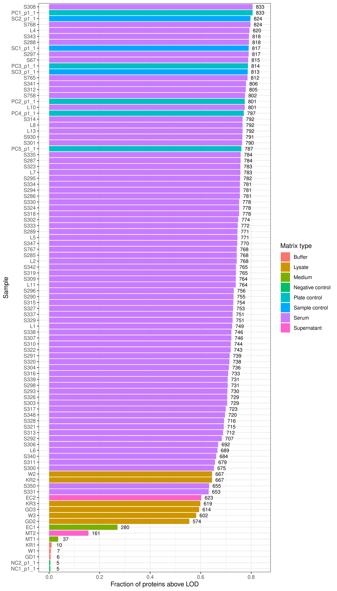
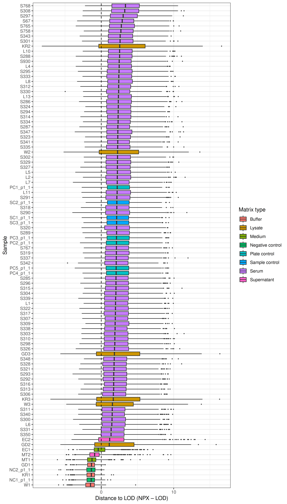
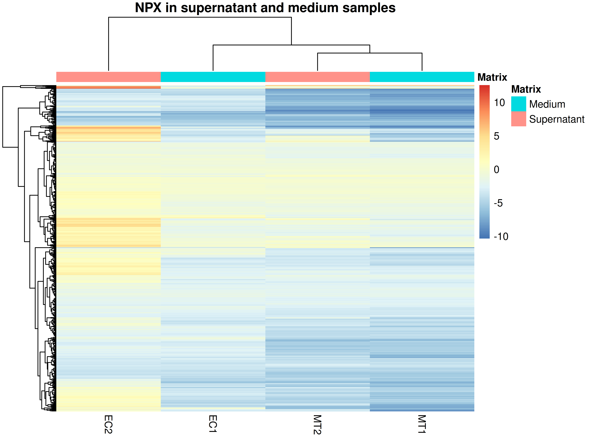
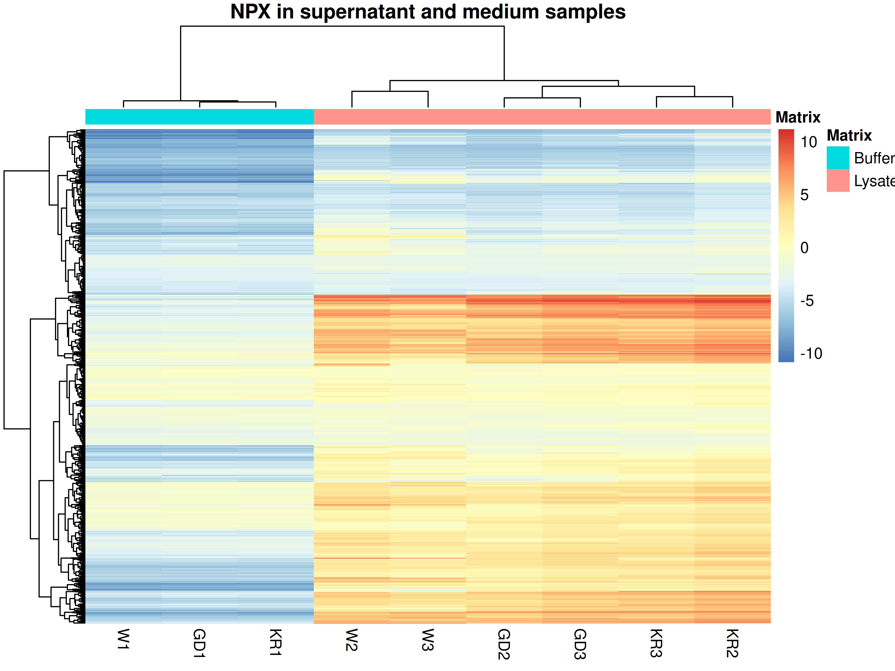

Last updated: 2025-12-12
Checks: 7 0
Knit directory: SSc-PAH/
This reproducible R Markdown analysis was created with workflowr (version 1.7.2). The Checks tab describes the reproducibility checks that were applied when the results were created. The Past versions tab lists the development history.
Great! Since the R Markdown file has been committed to the Git repository, you know the exact version of the code that produced these results.
Great job! The global environment was empty. Objects defined in the global environment can affect the analysis in your R Markdown file in unknown ways. For reproduciblity it’s best to always run the code in an empty environment.
The command set.seed(20251015) was run prior to running
the code in the R Markdown file. Setting a seed ensures that any results
that rely on randomness, e.g. subsampling or permutations, are
reproducible.
Great job! Recording the operating system, R version, and package versions is critical for reproducibility.
Nice! There were no cached chunks for this analysis, so you can be confident that you successfully produced the results during this run.
Great job! Using relative paths to the files within your workflowr project makes it easier to run your code on other machines.
Great! You are using Git for version control. Tracking code development and connecting the code version to the results is critical for reproducibility.
The results in this page were generated with repository version 8dd4066. See the Past versions tab to see a history of the changes made to the R Markdown and HTML files.
Note that you need to be careful to ensure that all relevant files for
the analysis have been committed to Git prior to generating the results
(you can use wflow_publish or
wflow_git_commit). workflowr only checks the R Markdown
file, but you know if there are other scripts or data files that it
depends on. Below is the status of the Git repository when the results
were generated:
Ignored files:
Ignored: .Rhistory
Ignored: .Rproj.user/
Untracked files:
Untracked: analysis/Olink_RV_dysf.Rmd
Untracked: analysis/VennDiagram.2025-10-16_12-40-35.351562.log
Untracked: analysis/VennDiagram.2025-10-22_22-26-15.195599.log
Untracked: analysis/VennDiagram.2025-10-24_20-43-26.101506.log
Untracked: analysis/VennDiagram.2025-10-24_20-54-12.491858.log
Untracked: analysis/VennDiagram.2025-10-30_20-49-49.773885.log
Untracked: analysis/VennDiagram.2025-10-30_20-58-01.820025.log
Untracked: analysis/VennDiagram.2025-10-30_21-01-21.178598.log
Untracked: analysis/omnipathr-log/
Untracked: data/322591_DEA_Serum_ENRICH-iST_C37202WU322591.xlsx
Untracked: data/Cohorts_comparison.xlsx
Untracked: data/Cohorts_comparison_2.xlsx
Untracked: data/DE_Groups_vs_Controls.xlsx
Untracked: data/Metadata_Olink_analysis.xlsx
Untracked: data/OLINK_PL/
Untracked: data/Plasma_ENRICHPlus_o37198_o37202_integrated_SummarizedExperiment.qs2
Untracked: data/Plasma_Urea_o37198_o37202_integrated_SummarizedExperiment.qs2
Untracked: data/Serum_ENRICHiST_o37198_o37202_integrated_SummarizedExperiment.qs2
Untracked: data/Serum_Urea_o37198_o37202_integrated_SummarizedExperiment.qs2
Untracked: data/Zurich_47_PAH_RHC_sample_list_CB040723_CLINICAL DATA_update20240109.xlsx
Untracked: data/o37198_2025-02-27_olink_SummarizedExperiment.qs2
Untracked: omnipathr-log/
Untracked: output/Olink_RV_dysf/
Untracked: renv.lock
Untracked: renv/
Unstaged changes:
Modified: .Rprofile
Note that any generated files, e.g. HTML, png, CSS, etc., are not included in this status report because it is ok for generated content to have uncommitted changes.
These are the previous versions of the repository in which changes were
made to the R Markdown (analysis/check_Olink_PL.Rmd) and
HTML (docs/check_Olink_PL.html) files. If you’ve configured
a remote Git repository (see ?wflow_git_remote), click on
the hyperlinks in the table below to view the files as they were in that
past version.
| File | Version | Author | Date | Message |
|---|---|---|---|---|
| Rmd | 8dd4066 | GinoBonazza | 2025-12-12 | wflow_publish("analysis/check_Olink_PL.Rmd") |
# Get current file name to make folder
current_file <- "Olink_RV_dysf"
# Load libraries
library(EnhancedVolcano)
library(here)
library(enrichplot)
library(readr)
library(readxl)
library(Matrix)
library(dplyr)
library(ggplot2)
library(magrittr)
library(tidyverse)
library(reshape2)
library(S4Vectors)
library(pheatmap)
library(png)
library(gridExtra)
library(scales)
library(RColorBrewer)
library(Matrix.utils)
library(tibble)
library(ggplot2)
library(scater)
library(patchwork)
library(statmod)
library(statmod)
library(rtracklayer)
library(png)
library(reactable)
library(UpSetR)
library(limma)
library(igraph)
library(gridExtra)
library(ggpubr)
library(DESeq2)
library(gprofiler2)
library(clusterProfiler)
library(org.Hs.eg.db)
library(AnnotationHub)
library(OlinkAnalyze)
library(UpSetR)
library(ComplexHeatmap)
library(survival)
library(broom)
#Output paths
output_dir_data <- here::here("output", current_file)
if (!dir.exists(output_dir_data)) dir.create(output_dir_data)
if (!dir.exists(here::here("docs", "figure"))) dir.create(here::here("docs", "figure"))
output_dir_figs <- here::here("docs", "figure", paste0(current_file, ".Rmd"))
if (!dir.exists(output_dir_figs)) dir.create(output_dir_figs)# ---- 1) Read your NPX data ----
# Option A: pre_quant.csv (what you have now)
npx_path <- here::here("data", "OLINK_PL", "pre_quant.csv")
#npx_raw <- readr::read_csv(npx_path)
npx_raw <- readr::read_delim(npx_path, delim = "\t")
dplyr::glimpse(npx_raw)Rows: 99,264
Columns: 31
$ SampleID <chr> "S323", "S302", "S293", "L7", "L13", "L4", "S3…
$ SampleType <chr> "SAMPLE", "SAMPLE", "SAMPLE", "SAMPLE", "SAMPL…
$ WellID <chr> "A1", "A2", "A3", "A4", "A5", "A6", "A7", "A8"…
$ PlateID <chr> "plate1", "plate1", "plate1", "plate1", "plate…
$ DataAnalysisRefID <chr> "R10002", "R10002", "R10002", "R10002", "R1000…
$ OlinkID <chr> "OID50348", "OID50348", "OID50348", "OID50348"…
$ UniProt <chr> "Q7Z7G0", "Q7Z7G0", "Q7Z7G0", "Q7Z7G0", "Q7Z7G…
$ Assay <chr> "ABI3BP", "ABI3BP", "ABI3BP", "ABI3BP", "ABI3B…
$ AssayType <chr> "assay", "assay", "assay", "assay", "assay", "…
$ Panel <chr> "Reveal", "Reveal", "Reveal", "Reveal", "Revea…
$ Block <dbl> 1, 1, 1, 1, 1, 1, 1, 1, 1, 1, 1, 1, 1, 1, 1, 1…
$ Count <dbl> 71169, 54363, 98266, 48536, 76410, 59770, 8568…
$ ExtNPX <dbl> 1.3414491, 0.9411095, 1.5620803, 0.8468975, 1.…
$ NPX <dbl> 0.372975767, -0.027363893, 0.593606889, -0.121…
$ Normalization <chr> "Intensity", "Intensity", "Intensity", "Intens…
$ PCNormalizedNPX <dbl> 0.53090280, 0.13056311, 0.75153387, 0.03635114…
$ AssayQC <chr> "PASS", "PASS", "PASS", "PASS", "PASS", "PASS"…
$ SampleQC <chr> "PASS", "PASS", "PASS", "PASS", "PASS", "PASS"…
$ SoftwareVersion <chr> "1.3.0", "1.3.0", "1.3.0", "1.3.0", "1.3.0", "…
$ SoftwareName <chr> "NPX Map CLI", "NPX Map CLI", "NPX Map CLI", "…
$ PanelDataArchiveVersion <chr> "1.3.0", "1.3.0", "1.3.0", "1.3.0", "1.3.0", "…
$ PreProcessingVersion <chr> "6.2.0", "6.2.0", "6.2.0", "6.2.0", "6.2.0", "…
$ PreProcessingSoftware <chr> "ngs2counts", "ngs2counts", "ngs2counts", "ngs…
$ InstrumentType <chr> "Illumina NovaSeq X Plus", "Illumina NovaSeq X…
$ IntraCV <dbl> 1.494757, 1.494757, 1.494757, 1.494757, 1.4947…
$ InterCV <lgl> NA, NA, NA, NA, NA, NA, NA, NA, NA, NA, NA, NA…
$ SampleBlockQCWarn <dbl> 1, 1, 1, 1, 1, 1, 1, 1, 1, 1, 1, 0, 1, 1, 1, 1…
$ SampleBlockQCFail <dbl> 1, 1, 1, 1, 1, 1, 1, 1, 1, 1, 1, 1, 1, 1, 1, 1…
$ BlockQCFail <dbl> 1, 1, 1, 1, 1, 1, 1, 1, 1, 1, 1, 1, 1, 1, 1, 1…
$ AssayQCWarn <dbl> 1, 1, 1, 1, 1, 1, 1, 1, 1, 1, 1, 1, 1, 1, 1, 1…
$ Group_Name1 <chr> "SSc_noPAH", "SSc_noPAH", "SSc_noPAH", "SSc_PA…# Should contain columns like: SampleID, SampleType, OlinkID, Assay, NPX, PCNormalizedNPX,
# DataAnalysisRefID, Normalization, Count, etc.# Path to the fixed LOD file you downloaded
fixedLOD_path <- here::here("data", "OLINK_PL", "Reveal_fixedLOD.csv")
npx_lod <- olink_lod(
data = npx_raw,
lod_file_path = fixedLOD_path,
lod_method = "FixedLOD"
)
# This adds columns: LOD, PCNormalizedLOD, etc. for assays where NPX-based LOD is valid
## 2) Bring in LODCount + LODMethod from the fixed LOD file
lod_info <- readr::read_delim(
fixedLOD_path,
delim = ";",
col_types = readr::cols()
) %>%
dplyr::select(
OlinkID,
DataAnalysisRefID,
LODNPX,
LODCount,
LODMethod
)
npx_lod <- npx_lod %>%
dplyr::left_join(
lod_info,
by = c("OlinkID", "DataAnalysisRefID")
)
## 3) Define "above LOD" and distance from LOD for ALL proteins
npx_lod <- npx_lod %>%
dplyr::mutate(
# NPX-based distance where LOD is available,
# otherwise count-based distance (log2 scale)
lod_dist = dplyr::case_when(
!is.na(LOD) ~ NPX - LOD, # NPX scale (lod_npx assays)
!is.na(LODCount) ~ log2(Count / LODCount), # count scale (lod_count assays)
TRUE ~ NA_real_
),
# Boolean: above LOD in whichever scale was used
above_LOD = dplyr::case_when(
!is.na(LOD) ~ NPX > LOD,
!is.na(LODCount) ~ Count > LODCount,
TRUE ~ NA
)
)# Flag whether each assay is above LOD
npx_lod <- npx_lod %>%
mutate(
above_LOD = NPX > LOD
)
# (Optional) define your own matrix-type groups
lysates <- c("KR2", "KR3", "W2", "W3", "GD2", "GD3")
supernatants <- c("MT2", "EC2")
buffer <- c("KR1", "W1", "GD1")
medium <- c("MT1", "EC1")
sample_info <- npx_lod %>%
distinct(SampleID, SampleType) %>%
mutate(
Matrix = dplyr::case_when(
SampleID %in% lysates ~ "Lysate",
SampleID %in% supernatants ~ "Supernatant",
SampleID %in% buffer ~ "Buffer",
SampleID %in% medium ~ "Medium",
SampleType == "NEGATIVE_CONTROL" ~ "Negative control",
SampleType == "PLATE_CONTROL" ~ "Plate control",
SampleType == "SAMPLE_CONTROL" ~ "Sample control",
TRUE ~ "Serum"
)
)
npx_lod <- npx_lod %>%
left_join(sample_info, by = c("SampleID", "SampleType"))
# Summarise: how many proteins above LOD per sample
lod_summary <- npx_lod %>%
group_by(SampleID, SampleType, Matrix) %>%
summarise(
n_proteins = dplyr::n(),
n_above_LOD = sum(above_LOD, na.rm = TRUE),
frac_above_LOD = n_above_LOD / n_proteins,
.groups = "drop"
)
lod_summary# A tibble: 96 × 6
SampleID SampleType Matrix n_proteins n_above_LOD frac_above_LOD
<chr> <chr> <chr> <int> <int> <dbl>
1 EC1 SAMPLE Medium 1034 280 0.271
2 EC2 SAMPLE Supernatant 1034 623 0.603
3 GD1 SAMPLE Buffer 1034 6 0.00580
4 GD2 SAMPLE Lysate 1034 574 0.555
5 GD3 SAMPLE Lysate 1034 614 0.594
6 KR1 SAMPLE Buffer 1034 10 0.00967
7 KR2 SAMPLE Lysate 1034 667 0.645
8 KR3 SAMPLE Lysate 1034 619 0.599
9 L1 SAMPLE Serum 1034 749 0.724
10 L10 SAMPLE Serum 1034 801 0.775
# ℹ 86 more rows# Barplot per sample, ordered by fraction above LOD
ggplot(lod_summary,
aes(x = reorder(SampleID, frac_above_LOD),
y = frac_above_LOD,
fill = Matrix)) +
geom_col() +
coord_flip() +
labs(
x = "Sample",
y = "Fraction of proteins above LOD",
fill = "Matrix type"
) +
theme_bw() +
geom_text(
aes(
label = n_above_LOD,
y = frac_above_LOD + 0.03
),
size = 3
)
# Order samples by median distance from LOD
sample_order <- npx_lod %>%
group_by(SampleID) %>%
summarise(median_lod_dist = median(lod_dist, na.rm = TRUE)) %>%
arrange(median_lod_dist) %>%
pull(SampleID)
npx_lod$SampleID <- factor(npx_lod$SampleID, levels = sample_order)
# Boxplot of distance-to-LOD per sample
ggplot(npx_lod,
aes(x = SampleID,
y = lod_dist,
fill = Matrix)) +
geom_boxplot(outlier.size = 0.3) +
geom_hline(yintercept = 0, linetype = "dashed") + # LOD line
coord_flip() +
labs(
x = "Sample",
y = "Distance to LOD (NPX – LOD)",
fill = "Matrix type"
) +
theme_bw()
lysates <- c("W1", "W2", "W3","GD1", "GD2", "GD3","KR1", "KR2", "KR3")
lysate_mat <- npx_lod %>%
dplyr::filter(SampleID %in% lysates,
Matrix %in% c("Lysate", "Buffer")) %>% # optional, if Matrix is defined
dplyr::select(Assay, SampleID, NPX) %>% # or use Target / OlinkID instead of Assay
distinct() %>%
tidyr::pivot_wider(
names_from = SampleID,
values_from = NPX
) %>%
mutate(
avg_lysate_NPX = rowMeans(across(all_of(lysates)), na.rm = TRUE)
) %>%
relocate(avg_lysate_NPX, .after = Assay) %>%
arrange(desc(avg_lysate_NPX))
lysate_mat %>% dplyr::glimpse()Rows: 1,034
Columns: 11
$ Assay <chr> "UNG", "RBPMS", "NDUFS6", "ATP6V1G2", "PNPT1", "IL33", …
$ avg_lysate_NPX <dbl> 6.139245, 5.693433, 5.460510, 5.015600, 4.921640, 4.716…
$ GD1 <dbl> -1.20470166, -0.98280865, -2.36993265, -0.71853131, -1.…
$ W2 <dbl> 8.754209, 9.265351, 8.087728, 7.412969, 7.682251, 6.999…
$ KR3 <dbl> 10.916676, 8.924059, 9.480864, 9.416475, 8.660360, 7.12…
$ KR1 <dbl> -1.2696633, -0.8383814, -3.0030308, -0.7924352, -1.7713…
$ KR2 <dbl> 11.104303, 8.888381, 10.280414, 9.832438, 8.783781, 8.0…
$ GD2 <dbl> 10.573933, 8.577012, 10.708325, 7.354926, 8.535330, 6.7…
$ W1 <dbl> -2.0873096, -1.2246562, -3.1045709, -1.3557054, -1.5909…
$ W3 <dbl> 7.458923, 9.683988, 7.915838, 5.851410, 6.887999, 8.119…
$ GD3 <dbl> 11.006839, 8.947949, 11.148958, 8.138850, 8.507533, 7.2…write.csv(lysate_mat, file = here::here(output_dir_data, "lysate_mat.csv"), quote=F, row.names = F)# Define the samples of interest
supernatants <- c("MT2", "EC2")
medium <- c("MT1", "EC1")
sup_med_ids <- c(supernatants, medium)
# 1) Build protein × sample NPX matrix
sup_med_long <- npx_lod %>%
dplyr::filter(SampleID %in% sup_med_ids) %>%
dplyr::select(Assay, SampleID, NPX) %>%
distinct()
sup_med_wide <- sup_med_long %>%
tidyr::pivot_wider(
names_from = SampleID,
values_from = NPX
)
mat_sup_med <- as.matrix(sup_med_wide[ , -1])
rownames(mat_sup_med) <- sup_med_wide$Assay
# Optional: column annotation (Matrix type)
col_anno <- data.frame(
Matrix = sample_info$Matrix[match(colnames(mat_sup_med), sample_info$SampleID)]
)
rownames(col_anno) <- colnames(mat_sup_med)
# 2) Heatmap
pheatmap::pheatmap(
mat_sup_med,
scale = "none", # z-score per protein (can set to "none" if you prefer raw NPX)
clustering_distance_rows = "euclidean",
clustering_distance_cols = "euclidean",
clustering_method = "complete",
show_rownames = FALSE, # set TRUE if you want all protein names
annotation_col = col_anno,
main = "NPX in supernatant and medium samples"
)
# Define the samples of interest
buffer <- c("W1", "GD1", "KR1")
lysate <- c("W2", "W3", "GD2", "GD3", "KR2", "KR3")
sup_med_ids <- c(buffer, lysate)
# 1) Build protein × sample NPX matrix
sup_med_long <- npx_lod %>%
dplyr::filter(SampleID %in% sup_med_ids) %>%
dplyr::select(Assay, SampleID, NPX) %>%
distinct()
sup_med_wide <- sup_med_long %>%
tidyr::pivot_wider(
names_from = SampleID,
values_from = NPX
)
mat_sup_med <- as.matrix(sup_med_wide[ , -1])
rownames(mat_sup_med) <- sup_med_wide$Assay
# Optional: column annotation (Matrix type)
col_anno <- data.frame(
Matrix = sample_info$Matrix[match(colnames(mat_sup_med), sample_info$SampleID)]
)
rownames(col_anno) <- colnames(mat_sup_med)
# 2) Heatmap
pheatmap::pheatmap(
mat_sup_med,
scale = "none", # z-score per protein (can set to "none" if you prefer raw NPX)
clustering_distance_rows = "euclidean",
clustering_distance_cols = "euclidean",
clustering_method = "complete",
show_rownames = FALSE, # set TRUE if you want all protein names
annotation_col = col_anno,
main = "NPX in supernatant and medium samples"
)
sup_medium <- c("MT1", "EC1", "MT2", "EC2")
sup_medium_mat <- npx_lod %>%
dplyr::filter(SampleID %in% sup_medium,
Matrix %in% c("Medium","Supernatant")) %>% # optional, if Matrix is defined
dplyr::select(Assay, SampleID, NPX) %>% # or use Target / OlinkID instead of Assay
distinct() %>%
tidyr::pivot_wider(
names_from = SampleID,
values_from = NPX
) %>%
mutate(
avg_lysate_NPX = rowMeans(across(all_of(sup_medium)), na.rm = TRUE)
) %>%
relocate(avg_lysate_NPX, .after = Assay) %>%
arrange(desc(avg_lysate_NPX))
sup_medium_mat %>% dplyr::glimpse()Rows: 1,034
Columns: 6
$ Assay <chr> "LIF", "COL9A1", "CSF2", "IL1A", "TNF", "PARP1", "IL1B"…
$ avg_lysate_NPX <dbl> 4.8659813, 3.6091725, 2.4801595, 2.3139490, 1.5842394, …
$ EC2 <dbl> 12.5509815, -0.3641986, 10.9014921, 5.8251762, 9.029730…
$ EC1 <dbl> -0.62692350, -1.35896325, -0.25212097, -0.87817925, -0.…
$ MT2 <dbl> 6.627779007, 8.028423309, -0.037069585, 2.388535976, -0…
$ MT1 <dbl> 0.912088335, 8.131428719, -0.691663384, 1.920262933, -1…write.csv(sup_medium_mat, file = here::here(output_dir_data, "sup_medium_mat.csv"), quote=F, row.names = F)
sessionInfo()R version 4.5.2 (2025-10-31)
Platform: x86_64-pc-linux-gnu
Running under: Ubuntu 24.04.3 LTS
Matrix products: default
BLAS: /usr/lib/x86_64-linux-gnu/openblas-pthread/libblas.so.3
LAPACK: /usr/lib/x86_64-linux-gnu/openblas-pthread/libopenblasp-r0.3.26.so; LAPACK version 3.12.0
locale:
[1] LC_CTYPE=en_US.UTF-8 LC_NUMERIC=C
[3] LC_TIME=en_US.UTF-8 LC_COLLATE=en_US.UTF-8
[5] LC_MONETARY=en_US.UTF-8 LC_MESSAGES=en_US.UTF-8
[7] LC_PAPER=en_US.UTF-8 LC_NAME=C
[9] LC_ADDRESS=C LC_TELEPHONE=C
[11] LC_MEASUREMENT=en_US.UTF-8 LC_IDENTIFICATION=C
time zone: Etc/UTC
tzcode source: system (glibc)
attached base packages:
[1] grid stats4 stats graphics grDevices datasets utils
[8] methods base
other attached packages:
[1] broom_1.0.11 survival_3.8-3
[3] ComplexHeatmap_2.26.0 OlinkAnalyze_4.4.0
[5] AnnotationHub_4.0.0 BiocFileCache_3.0.0
[7] dbplyr_2.5.1 org.Hs.eg.db_3.22.0
[9] AnnotationDbi_1.72.0 clusterProfiler_4.18.2
[11] gprofiler2_0.2.4 DESeq2_1.50.2
[13] ggpubr_0.6.2 igraph_2.2.1
[15] limma_3.66.0 UpSetR_1.4.0
[17] reactable_0.4.5 rtracklayer_1.70.0
[19] statmod_1.5.1 patchwork_1.3.2
[21] scater_1.38.0 scuttle_1.20.0
[23] SingleCellExperiment_1.32.0 SummarizedExperiment_1.40.0
[25] Biobase_2.70.0 GenomicRanges_1.62.0
[27] Seqinfo_1.0.0 IRanges_2.44.0
[29] MatrixGenerics_1.22.0 matrixStats_1.5.0
[31] Matrix.utils_0.9.7 RColorBrewer_1.1-3
[33] scales_1.4.0 gridExtra_2.3
[35] png_0.1-8 pheatmap_1.0.13
[37] S4Vectors_0.48.0 BiocGenerics_0.56.0
[39] generics_0.1.4 reshape2_1.4.5
[41] lubridate_1.9.4 forcats_1.0.1
[43] stringr_1.6.0 purrr_1.2.0
[45] tidyr_1.3.1 tibble_3.3.0
[47] tidyverse_2.0.0 magrittr_2.0.4
[49] dplyr_1.1.4 Matrix_1.6-5
[51] readxl_1.4.5 readr_2.1.6
[53] enrichplot_1.30.4 here_1.0.2
[55] EnhancedVolcano_1.29.1 ggrepel_0.9.6
[57] ggplot2_4.0.1
loaded via a namespace (and not attached):
[1] fs_1.6.6 bitops_1.0-9 doParallel_1.0.17
[4] httr_1.4.7 tools_4.5.2 backports_1.5.0
[7] utf8_1.2.6 R6_2.6.1 lazyeval_0.2.2
[10] GetoptLong_1.1.0 withr_3.0.2 cli_3.6.5
[13] scatterpie_0.2.6 labeling_0.4.3 sass_0.4.10
[16] mvtnorm_1.3-3 S7_0.2.1 Rsamtools_2.26.0
[19] systemfonts_1.3.1 yulab.utils_0.2.2 gson_0.1.0
[22] DOSE_4.4.0 R.utils_2.13.0 rstudioapi_0.17.1
[25] RSQLite_2.4.5 shape_1.4.6.1 gridGraphics_0.5-1
[28] BiocIO_1.20.0 vroom_1.6.7 car_3.1-3
[31] GO.db_3.22.0 ggbeeswarm_0.7.3 abind_1.4-8
[34] R.methodsS3_1.8.2 lifecycle_1.0.4 whisker_0.4.1
[37] yaml_2.3.11 carData_3.0-5 qvalue_2.42.0
[40] SparseArray_1.10.4 blob_1.2.4 promises_1.5.0
[43] crayon_1.5.3 ggtangle_0.0.9 lattice_0.22-7
[46] beachmat_2.26.0 cowplot_1.2.0 cigarillo_1.0.0
[49] KEGGREST_1.50.0 pillar_1.11.1 knitr_1.50
[52] fgsea_1.36.0 rjson_0.2.23 estimability_1.5.1
[55] codetools_0.2-20 fastmatch_1.1-6 glue_1.8.0
[58] ggiraph_0.9.2 ggfun_0.2.0 fontLiberation_0.1.0
[61] data.table_1.17.8 vctrs_0.6.5 treeio_1.34.0
[64] cellranger_1.1.0 gtable_0.3.6 cachem_1.1.0
[67] xfun_0.54 S4Arrays_1.10.1 iterators_1.0.14
[70] nlme_3.1-168 ggtree_4.0.1 bit64_4.6.0-1
[73] fontquiver_0.2.1 filelock_1.0.3 rprojroot_2.1.1
[76] bslib_0.9.0 irlba_2.3.5.1 vipor_0.4.7
[79] otel_0.2.0 colorspace_2.1-2 DBI_1.2.3
[82] tidyselect_1.2.1 emmeans_2.0.0 bit_4.6.0
[85] compiler_4.5.2 curl_7.0.0 git2r_0.36.2
[88] httr2_1.2.1 BiocNeighbors_2.4.0 fontBitstreamVera_0.1.1
[91] DelayedArray_0.36.0 plotly_4.11.0 rappdirs_0.3.3
[94] digest_0.6.39 rmarkdown_2.30 XVector_0.50.0
[97] htmltools_0.5.9 pkgconfig_2.0.3 fastmap_1.2.0
[100] GlobalOptions_0.1.3 rlang_1.1.6 htmlwidgets_1.6.4
[103] farver_2.1.2 jquerylib_0.1.4 jsonlite_2.0.0
[106] BiocParallel_1.44.0 GOSemSim_2.36.0 R.oo_1.27.1
[109] BiocSingular_1.26.1 RCurl_1.98-1.17 Formula_1.2-5
[112] ggplotify_0.1.3 Rcpp_1.1.0 ape_5.8-1
[115] ggnewscale_0.5.2 viridis_0.6.5 gdtools_0.4.4
[118] stringi_1.8.7 MASS_7.3-65 plyr_1.8.9
[121] parallel_4.5.2 Biostrings_2.78.0 splines_4.5.2
[124] circlize_0.4.16 hms_1.1.4 locfit_1.5-9.12
[127] ggsignif_0.6.4 ScaledMatrix_1.18.0 BiocVersion_3.22.0
[130] XML_3.99-0.20 evaluate_1.0.5 renv_1.1.5
[133] BiocManager_1.30.27 foreach_1.5.2 tzdb_0.5.0
[136] tweenr_2.0.3 httpuv_1.6.16 grr_0.9.5
[139] polyclip_1.10-7 clue_0.3-66 ggforce_0.5.0
[142] rsvd_1.0.5 xtable_1.8-4 restfulr_0.0.16
[145] tidytree_0.4.6 tidydr_0.0.6 rstatix_0.7.3
[148] later_1.4.4 viridisLite_0.4.2 aplot_0.2.9
[151] memoise_2.0.1 beeswarm_0.4.0 GenomicAlignments_1.46.0
[154] cluster_2.1.8.1 workflowr_1.7.2 timechange_0.3.0